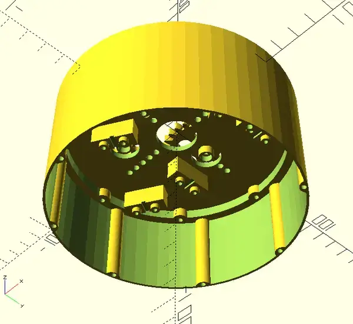
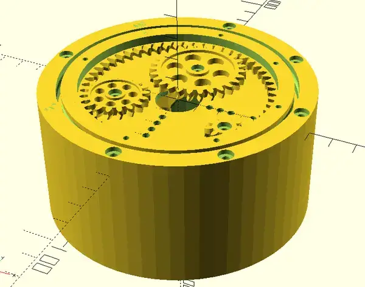
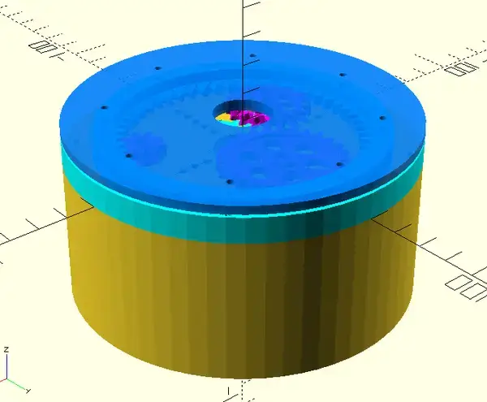
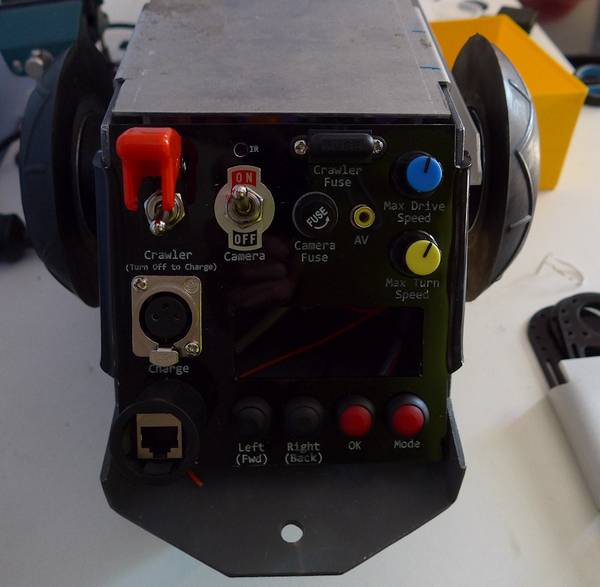

CAD/CAM Services
Accelerate product development using advanced CAD tools and 3D printing workflows. I offer end-to-end support—from concept sketches and detailed design to fabrication—enabling rapid iteration and reduced time-to-market.
What I offer (CAD):
I am experienced with designing parts and assemblies for:
- CNC routing and milling of metal and wood
- CNC Laser Cutting
- CNC Waterjet cutting of metal
- 3D printing
- PCB Manufacture and assembly
I can produce work in:
- Autodesk Fusion 360
- VCarve Pro
- OpenSCAD
- KiCAD
About OpenSCAD
OpenSCAD is a programmatic approach to CAD modelling that allows for highly parametric builds, in which I have 10 years experience.



What I offer (CAM)
3D printing Service
I have an inhouse capacity for FDM and resin printing. For FDM, I can produce small detailed print via a Bambu Labs X1C Carbon (build volume 256x256x256 mm), or if required I have a large format printer for build volumes up to 420x420x480mm.
General Workshop Fabrication and Services
I can offer basic services in welding, metalwork, acrylics, soldering, assembly and cabinetry.
Instrument Panels
Laser cut acrylic panels, moulded to fit surfaces, durable painted text.

What I Don’t Do
- Design for plastic injection moulding
- Work that requires engineering certificates
- Load bearing or unsafe projects.
- High volume production
- Costume design
- Military applications
Who I Work With
- Agtech firms
- Research institutions and R&D teams
- Industrial and scientific software developers
- Engineering and modelling specialists
- People creating Art/Festival/Museum installations
Why Work With Me?
- Quick turnaround – with drafting and production under the one roof.
- Broad General experience – jack of all trades that can pivot with your needs
- Can do attitude – If the job is within my skill-set lets make some cool stuff. If it’s not in my skill-set, I can generally recommend a specialist. I won’t waste your time and energy by downplaying your vision or ideas.